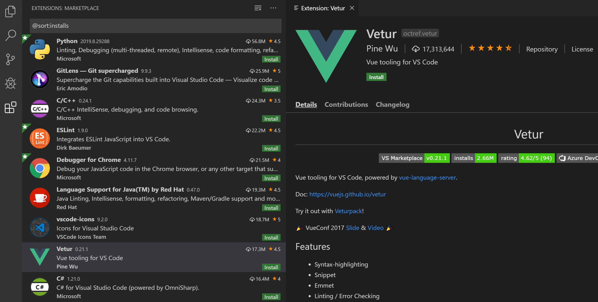
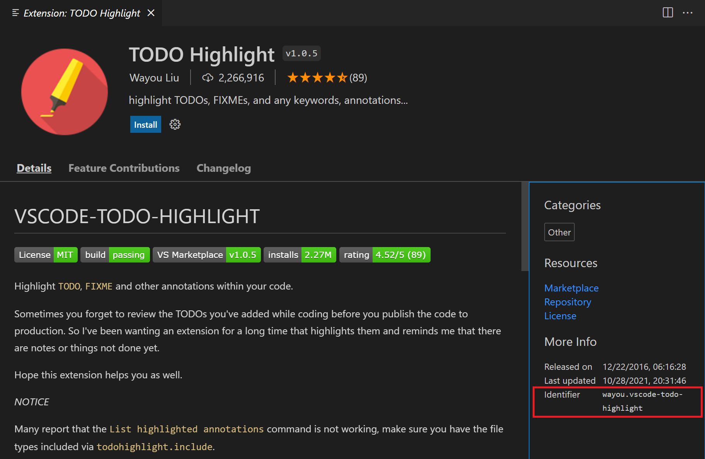

Extension Marketplace
Increase the power of Visual Studio Code through Extensions
The features that Visual Studio Code includes out-of-the-box are just the start. VS Code extensions let you add languages, debuggers, and tools to your installation to support your development workflow. VS Code's rich extensibility model lets extension authors plug directly into the VS Code UI and contribute functionality through the same APIs used by VS Code. This article explains how to find, install, and manage VS Code extensions from the Visual Studio Code Marketplace.
Browse for extensions
You can browse and install extensions from within VS Code. Bring up the Extensions view by clicking on the Extensions icon in the Activity Bar on the side of VS Code or the View: Extensions command (X (Windows, Linux Ctrl+Shift+X)).

This will show you a list of the most popular VS Code extensions on the VS Code Marketplace.

Each extension in the list includes a brief description, the publisher, the download count, and a five star rating. You can select the extension item to display the extension's details page where you can learn more.
Note: If your computer's Internet access goes through a proxy server, you will need to configure the proxy server. See Proxy server support for details.
Install an extension
To install an extension, select the Install button. Once the installation is complete, the Install button will change to the Manage gear button.
Find and install an extension
For example, let's install the popular TODO Highlight extension. This extension highlights text like 'TODO:' and 'FIXME:' in your source code so you can quickly find undone sections.

In the Extensions view (X (Windows, Linux Ctrl+Shift+X)), type 'todo' in the search box to filter the Marketplace offerings to extensions with 'todo' in the title or metadata. You should see the TODO Highlight extension in the list.

An extension is uniquely identified by its publisher and extension IDs. If you select the TODO Highlight extension, you will see the Extension details page, where you can find the extension ID, in this case, wayou.vscode-todo-highlight. Knowing the extension ID can be helpful if there are several similarly named extensions.

Select the Install button, and VS Code will download and install the extension from the Marketplace. When the installation is complete, the Install button will be replaced with a Manage gear button.

To see the TODO Highlight extension in action, open any source code file and add the text 'TODO:' and you will see the text highlighted.
The TODO Highlight extension contributes the commands, TODO-Highlight: List highlighted annotations and TODO-Highlight: Toggle highlight, that you can find in the Command Palette (P (Windows, Linux Ctrl+Shift+P)). The TODO-Highlight: Toggle highlight command lets you quickly disable or enable highlighting.

The extension also provides settings for tuning its behavior, which you can find in the Settings editor (, (Windows, Linux Ctrl+,)). For example, you might want the text search to be case insensitive and you can uncheck the Todohighlight: Is Case Sensitive setting.

If an extension doesn't provide the functionality you want, you can always Uninstall the extension from the Manage button context menu.

This has been just one example of how to install and use an extension. The VS Code Marketplace has thousands of extensions supporting hundreds of programming languages and tasks. Everything from full featured language support for Java, Python, Go, and C++ to simple extensions that create GUIDs, change the color theme, or add virtual pets to the editor.
Extension details
On the extension details page, you can read the extension's README and review the extension's:
- Feature Contributions - The extension's additions to VS Code such as settings, commands and keyboard shortcuts, language grammars, debugger, etc.
- Changelog - The extension repository CHANGELOG if available.
- Dependencies - Lists if the extension depends on any other extensions.

If an extension is an Extension Pack, the Extension Pack section will display which extensions will be installed when you install the pack. Extension Packs bundle separate extensions together so they can be easily installed at one time.
Extensions view filter and commands
You can filter the Extensions view with the Filter Extensions context menu.

There are filters to show:
- The list of currently installed extensions
- The list of outdated extensions that can be updated
- The list of currently enabled/disabled extensions
- The list of recommended extensions based on your workspace
- The list of globally popular extensions
You can sort the extension list by Install Count or Rating in either ascending or descending order. You can learn more about extension search filters below.
You can run additional Extensions view commands via the ... View and More Actions button.
Through this context menu you can control extension updates, enable or disable all extensions, and use the Extension Bisect utility to isolate problematic extension behavior.
Search for an extension
You can clear the Search box at the top of the Extensions view and type in the name of the extension, tool, or programming language you're looking for.
For example, typing 'python' will bring up a list of Python language extensions:

If you know the exact identifier for an extension you're looking for, you can use the @id: prefix, for example @id:octref.vetur. Additionally, to filter or sort results, you can use the filter and sort commands, detailed below.
Manage extensions
VS Code makes it easy to manage your extensions. You can install, disable, update, and uninstall extensions through the Extensions view, the Command Palette (commands have the Extensions: prefix) or command-line switches.
List installed extensions
By default, the Extensions view will show the extensions you currently have enabled, all extensions that are recommended for you, and a collapsed view of all extensions you have disabled. You can use the Show Installed Extensions command, available in the Command Palette (P (Windows, Linux Ctrl+Shift+P)) or the More Actions (...) dropdown menu, to clear any text in the search box and show the list of all installed extensions, which includes those that have been disabled.
Uninstall an extension
To uninstall an extension, select the Manage gear button at the right of an extension entry and then choose Uninstall from the dropdown menu. This will uninstall the extension and prompt you to reload VS Code.

Disable an extension
If you don't want to permanently remove an extension, you can instead temporarily disable the extension by clicking the gear button at the right of an extension entry. You can disable an extension globally or just for your current Workspace. You will be prompted to reload VS Code after you disable an extension.
If you want to quickly disable all installed extensions, there is a Disable All Installed Extensions command in the Command Palette and More Actions (...) dropdown menu.
Extensions remain disabled for all VS Code sessions until you re-enable them.
Enable an extension
Similarly if you have disabled an extension (it will be in the Disabled section of the list and marked Disabled), you can re-enable it with the Enable or Enable (Workspace) commands in the dropdown menu.

There is also an Enable All Extensions command in the More Actions (...) dropdown menu.
Extension auto-update
VS Code checks for extension updates and installs them automatically. After an update, you will be prompted to reload VS Code. If you'd rather update your extensions manually, you can disable auto-update with the Disable Auto Updating Extensions command that sets the extensions.autoUpdate setting to false. If you don't want VS Code to even check for updates, you can set the extensions.autoCheckUpdates setting to false.
Update an extension manually
If you have extensions auto-update disabled, you can quickly look for extension updates by using the Show Outdated Extensions command that uses the @outdated filter. This will display any available updates for your currently installed extensions. Select the Update button for the outdated extension and the update will be installed and you'll be prompted to reload VS Code. You can also update all your outdated extensions at one time with the Update All Extensions command. If you also have automatic checking for updates disabled, you can use the Check for Extension Updates command to check which of your extensions can be updated.
Recommended extensions
You can see a list of recommended extensions using Show Recommended Extensions, which sets the @recommended filter. Extension recommendations can either be:
- Workspace Recommendations - Recommended by other users of your current workspace.
- Other Recommendations - Recommended based on recently opened files.
See the section below to learn how to contribute recommendations for other users in your project.
Ignoring recommendations
To dismiss a recommendation, select on the extension item to open the Details page and then select the Manage gear button to display the context menu. Select the Ignore Recommendation menu item. Ignored recommendations will no longer be recommended to you.

Configuring extensions
VS Code extensions may have very different configurations and requirements. Some extensions contribute settings to VS Code, which can be modified in the Settings editor. Other extensions may have their own configuration files. Extensions may also require installation and setup of additional components like compilers, debuggers, and command-line tools. Consult the extension's README (visible in the Extensions view details page) or go to the extension page on the VS Code Marketplace (click on the extension name in the details page). Many extensions are open source and have a link to their repository on their Marketplace page.
Command line extension management
To make it easier to automate and configure VS Code, it is possible to list, install, and uninstall extensions from the command line. When identifying an extension, provide the full name of the form publisher.extension, for example ms-python.python.
Example:
code --extensions-dir <dir>
Set the root path for extensions.
code --list-extensions
List the installed extensions.
code --show-versions
Show versions of installed extensions, when using --list-extension.
code --install-extension (<extension-id> | <extension-vsix-path>)
Installs an extension.
code --uninstall-extension (<extension-id> | <extension-vsix-path>)
Uninstalls an extension.
code --enable-proposed-api (<extension-id>)
Enables proposed API features for extensions. Can receive one or more extension IDs to enable individually.
You can see the extension ID on the extension details page under the Marketplace Info.

Extensions view filters
The Extensions view search box supports filters to help you find and manage extensions. You may have seen filters such as @installed and @recommended if you used the commands Show Installed Extensions and Show Recommended Extensions. Also, there are filters available to let you sort by popularity or ratings and search by category (for example 'Linters') and tags (for example 'node'). You can see a complete listing of all filters and sort commands by typing @ in the extensions search box and navigating through the suggestions:

Here are the Extensions view filters:
@builtin- Show extensions that come with VS Code. Grouped by type (Programming Languages, Themes, etc.).@disabled- Show disabled installed extensions.@installed- Show installed extensions.@outdated- Show outdated installed extensions. A newer version is available on the Marketplace.@enabled- Show enabled installed extensions. Extensions can be individually enabled/disabled.@recommended- Show recommended extensions. Grouped as Workspace specific or general use.@category- Show extensions belonging to specified category. Below are a few of supported categories. For a complete list, type@categoryand follow the options in the suggestion list:@category:themes@category:formatters@category:linters@category:snippets
These filters can be combined as well. For example: Use @installed @category:themes to view all installed themes.
If no filter is provided, the Extensions view displays the currently installed and recommended extensions.
Sorting
You can sort extensions with the @sort filter, which can take the following values:
installs- Sort by Marketplace installation count, in descending order.rating- Sort by Marketplace rating (1-5 stars), in descending order.name- Sort alphabetically by extension name.

Categories and tags
Extensions can set Categories and Tags describing their features.
You can filter on category and tag by using category: and tag:.
Supported categories are: [Programming Languages, Snippets, Linters, Themes, Debuggers, Formatters, Keymaps, SCM Providers, Other, Extension Packs, Language Packs, Data Science, Machine Learning, Visualization, Notebooks, Education, Testing]. They can be accessed through IntelliSense in the extensions search box:

Note that you must surround the category name in quotes if it is more than one word (for example, category:"SCM Providers").
Tags may contain any string and are not provided by IntelliSense, so review the Marketplace to find helpful tags.
Install from a VSIX
You can manually install a VS Code extension packaged in a .vsix file. Using the Install from VSIX command in the Extensions view command dropdown, or the Extensions: Install from VSIX command in the Command Palette, point to the .vsix file.
You can also install using the VS Code --install-extension command-line switch providing the path to the .vsix file.
code --install-extension myextension.vsix
You may provide the --install-extension multiple times on the command line to install multiple extensions at once.
If you'd like to learn more about packaging and publishing extensions, see our Publishing Extensions article in the Extension API.
Workspace recommended extensions
A good set of extensions can make working with a particular workspace or programming language more productive and you'd often like to share this list with your team or colleagues. You can create a recommended list of extensions for a workspace with the Extensions: Configure Recommended Extensions (Workspace Folder) command.
In a single folder workspace, the command creates an extensions.json file located in the workspace .vscode folder where you can add a list of extensions identifiers ({publisherName}.{extensionName}).
In a multi-root workspace, the command will open your .code-workspace file where you can list extensions under extensions.recommendations. You can still add extension recommendations to individual folders in a multi-root workspace by using the Extensions: Configure Recommended Extensions (Workspace Folder) command.
An example extensions.json could be:
{
"recommendations": ["dbaeumer.vscode-eslint", "esbenp.prettier-vscode"]
}
which recommends a linter extension and a code formatter extension.
An extension is identified using its publisher name and extension identifier publisher.extension. You can see the name on the extension's detail page. VS Code will provide you with auto-completion for installed extensions inside these files.
.
VS Code prompts a user to install the recommended extensions when a workspace is opened for the first time. The user can also review the list with the Extensions: Show Recommended Extensions command.

Next steps
Here are a few topics you may find interesting...
- Extension API - Start learning about the VS Code extension API.
- Your First Extension - Try creating a simple Hello World extension.
- Publishing to the Marketplace - Publish your own extension to the VS Code Marketplace.
Common questions
Where are extensions installed?
Extensions are installed in a per user extensions folder. Depending on your platform, the location is in the following folder:
- Windows
%USERPROFILE%\.vscode\extensions - macOS
~/.vscode/extensions - Linux
~/.vscode/extensions
You can change the location by launching VS Code with the --extensions-dir <dir> command-line option.
Whenever I try to install any extension, I get a connect ETIMEDOUT error
You may see this error if your machine is going through a proxy server to access the Internet. See the Proxy server support section in the setup topic for details.
Can I download an extension directly from the Marketplace?
Some users prefer to download an extension once from the Marketplace and then install it multiple times from a local share. This is useful when there are connectivity concerns or if your development team wants to use a fixed set of extensions.
To download an extension, navigate to the details page for the specific extension within the Marketplace. On that page, there is a Download Extension link in the Resources section, which is located on the right-hand side of the page.
Once downloaded, you can then install the extension via the Install from VSIX command in the Extensions view command dropdown.
Can I stop VS Code from providing extension recommendations?
Yes, if you would prefer to not have VS Code display extension recommendations in the Extensions view or through notifications, you can modify the following settings:
extensions.showRecommendationsOnlyOnDemand- Set to true to remove the RECOMMENDED section.extensions.ignoreRecommendations- Set to true to silence extension recommendation notifications.
The Show Recommended Extensions command is always available if you want to see recommendations.
Can I trust extensions from the Marketplace?
The Marketplace runs a virus scan on each extension package that's published to ensure its safety. The virus scan is run for each new extension and for each extension update. Until the scan is all clear, the extension won't be published in the Marketplace for public usage.
The Marketplace also prevents extension authors from name-squatting on official publishers such as Microsoft and RedHat.
If a malicious extension is reported and verified, or a vulnerability is found in an extension dependency:
- The extension is removed from the Marketplace.
- The extension is added to a kill list so that if it has been installed, it will be automatically uninstalled by VS Code.
The Marketplace also provides you with resources to make an informed decision about the extensions you install:
- Ratings & Review - Read what others think about the extension.
- Q & A - Review existing questions and the level of the publisher's responsiveness. You can also engage with the extension's publisher(s) if you have concerns.
- Issues, Repository, and License - Check if the publisher has provided these and if they have the support you expect.
If you do see an extension that looks suspicious, you can report the extension to the Marketplace with the Report Abuse link at the bottom of the extension More Info section.